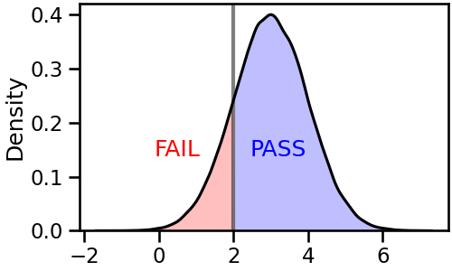

- 밀도 함수는 데이터 분포를 볼 때 가장 많이 그리는 그림 중 하나입니다.
- 특정 값을 기준으로 Pass와 Fail을 정한다고 할 때, 전체의 비율도 중요합니다.
- seaborn kdeplot을 살짝 다듬어서 쪼개고 비율을 계산합니다.
1. 오늘의 목표
- 오늘 우리는 데이터를 선별하는 데 쓰는, 이런 그림을 그릴 겁니다.
- 특정 값을 기준으로 왼쪽은 Fail, 오른쪽은 Pass입니다.
- 공장에서 발생하는 양품과 불량품으로 생각을 해도 좋고, 학생들 시험 결과의 분포로 봐도 좋습니다.
- 중요한 것은 특정 지점을 기준으로 KDE plot을 자르고, 좌우를 다른 색으로 칠하는 것입니다.
2. 데이터 → 밀도 함수
numpy를 사용해서 정규분포에 가까운 데이터를 만듭니다.np.random.normal()을 사용하면 뚝딱 만들어집니다.loc,scale을 사용해서 평균과 표준편차를 지정하고,size에는 10만을 넣습니다.이렇게 얻은 결과를
seaborn.kdeplot()으로 밀도함수로 표현합니다.1
2
3
4
5
6
7
8
9
10
11
12
13%matplotlib inline
import matplotlib.pyplot as plt
import seaborn as sns
import numpy as np
sns.set_context("talk")
# 예제 데이터 생성
set0 = np.random.normal(loc=3, scale=1, size=100_000)
# 데이터 분포 밀도함수 시각화
fig, ax = plt.subplots(figsize=(5, 3), constrained_layout=True)
sns.kdeplot(set0, fill=True, ax=ax)매끈한 밀도함수가 얻어졌습니다.
이토록 데이터 분포가 매끈해보이는 것은
seaborn.kdeplot()에 숨겨진gridsize=200이라는 매개변수 덕분입니다.데이터가 쪼개지는 지점을 눈에 잘 띄게 하겠습니다.
gridsize=20을 입력해서 같은 데이터를 거칠게 표현합니다.1
2fig, ax = plt.subplots(figsize=(5, 3), constrained_layout=True)
sns.kdeplot(set0, fill=True, gridsize=20, ax=ax)
3. 밀도 함수 절단
- 똑같은 데이터인데 전혀 매끈하지 않습니다.
- 한 눈에 봐도 꼭지점과 선분으로 이루어진 다각형이라는 것을 알 수 있습니다.
- $x = 2$
- 꼭지점 중 $x > 2$만 남겨서 이것들로 다각형을 새로 만들면 되지 않을까요?
KDE plot을 구성하는 다각형은
ax.collections로 추출할 수 있습니다.이 중에서도 윤곽선은
.get_path()[0]명령으로 뽑아낼 수 있고,꼭지점은 여기에
.vertices, 꼭지점의 특성은.codes속성을 보면 됩니다.한번 추출해 봅니다.
1
2
3
4
5
6
7# vertices
path = ax.collections[0].get_paths()[0]
vertices = path.vertices
codes = path.codes
print(f"# vertices = {vertices}")
print(f"# codes = {codes}")- 실행 결과
1
2
3
4
5
6
7
8
9
10
11
12# vertices = [[-1.68144422e+00 4.44446302e-07]
[-1.68144422e+00 0.00000000e+00]
[-1.20843724e+00 0.00000000e+00]
[-7.35430261e-01 0.00000000e+00]
[-2.62423283e-01 0.00000000e+00]
(중략)
[-1.68144422e+00 4.44446302e-07]
[-1.68144422e+00 4.44446302e-07]]
# codes = [ 1 2 2 2 2 2 2 2 2 2 2 2 2 2 2 2 2 2 2 2 2 2 2 2
2 2 2 2 2 2 2 2 2 2 2 2 2 2 2 2 2 2 79]
- 실행 결과
vertices에는 수많은 점의 $(x, y)$ 좌표가 나열되어 있습니다.
이 데이터를 기준으로 threshold를 적용하면 될 것 같습니다.
해당 데이터의 index를 추출합니다.
1
2
3# x > 2 인 꼭지점 추출
idx_th = np.where(vertices[:, 0] > 2)[0]
idx_th- 실행 결과
1
2array([ 9, 10, 11, 12, 13, 14, 15, 16, 17, 18, 19, 20, 21, 22, 23, 24, 25,
26, 27, 28, 29, 30, 31, 32, 33])
- 실행 결과
codes가 중요한 정보를 담고 있습니다.
1은 시작점, 2는 연결점, 79는 polygon close입니다.
$ x > 2 $인 점들의 index를 추출하다 보면 code가 규칙에서 어긋날 수 있습니다.
그렇기 때문에, 첫 점과 마지막 점의 code에 강제로 1과 79를 할당합니다.
이렇게 추출된 vertices와 codes를 다시 윤곽선을 의미하는 path에 할당하고 그림을 그리면 변화가 관찰됩니다.
1
2
3
4
5
6
7
8
9vertices_th = vertices[idx_th]
codes_th = codes[idx_th]
path.vertices = vertices_th
path.codes = codes_th
path.codes[0] = 1 # 시작점 (MOVETE)
path.codes[-1] = 79 # 닫는 점 (CLOSEPOLY)
display(fig)
4. 부가 요소 활용
전체 코드를 한 번 정리합니다.
gridsize를 기본값으로 복구시켜 매끈한 곡선을 얻고,밀도 함수를 절단한 뒤 다시 전체 밀도 함수를 선으로만 그려 부분과 전체를 동시에 표시합니다.
1
2
3
4
5
6
7
8
9
10
11
12
13
14
15
16
17
18
19
20
21fig, ax = plt.subplots(figsize=(5, 3), constrained_layout=True)
# 1. threshold 적용 KDE plot
sns.kdeplot(set0, fill=True, ax=ax)
# vertices
path = ax.collections[0].get_paths()[0]
vertices = path.vertices
codes = path.codes
# threshold
idx_th = np.where(vertices[:, 0] > 2)[0]
vertices_th = vertices[idx_th]
codes_th = codes[idx_th]
path.vertices = vertices_th
path.codes = codes_th
path.codes[0] = 1
path.codes[-1] = 79
# 2. threshold 미적용 KDE plot
sns.kdeplot(set0, fill=False, color="k", ax=ax)이제 저 영역이 Pass라는 것을 문자를 사용해 명시합니다.
색도 기본색보다 조금은 의지를 반영해 특정 색을 지정합니다. 파랑으로 갑시다.
기준점이 되는 $x = 2$에 기준 막대도 우뚝 세워줍니다.
1
2
3
4
5
6
7
8
9
10
11
12
13
14
15
16
17
18
19
20
21
22
23
24
25
26fig, ax = plt.subplots(figsize=(5, 3), constrained_layout=True)
# 1. threshold 적용 KDE plot
sns.kdeplot(set0, color="b", gridsize=500, fill=True, ax=ax)
# vertices
path = ax.collections[0].get_paths()[0]
vertices = path.vertices
codes = path.codes
# threshold
idx_th = np.where(vertices[:, 0] > 2)[0]
vertices_th = vertices[idx_th]
codes_th = codes[idx_th]
path.vertices = vertices_th
path.codes = codes_th
path.codes[0] = 1
path.codes[-1] = 79
# 2. threshold 미적용 KDE plot
sns.kdeplot(set0, fill=False, color="k", ax=ax)
# 3. additional information
ax.collections[0].set_lw(0) # threshold 적용 KDE plot의 윤곽선 제거
ax.axvline(2, c="k", lw=3, alpha=0.5) # threshold line
ax.text(3.2, 0.15, "PASS", color="b", ha="center", va="center")
- 같은 요령으로, 왼쪽에 FAIL이라고 명시할 수 있습니다.
- 동일한 작업을 threshold 방향만 바꾸어 반복하면 됩니다.
코드 보기/접기
1
2
3
4
5
6
7
8
9
10
11
12
13
14
15
16
17
18
19
20
21
22
23
24
25
26
27
28
29
30
31
32
33
34
35
36
37
38
39
40
41
42
43
44
45
46# PASS and FAIL
fig, ax = plt.subplots(figsize=(5, 3), constrained_layout=True)
# 1. threshold 적용 KDE plot
sns.kdeplot(set0, color="b", gridsize=500, fill=True, ax=ax) # Pass
sns.kdeplot(set0, color="r", gridsize=500, fill=True, ax=ax) # Fail
## PASS
# vertices
path_p = ax.collections[0].get_paths()[0]
vertices_p = path_p.vertices
codes_p = path_p.codes
# threshold
idx_th_p = np.where(vertices_p[:, 0] > 2)[0]
vertices_th_p = vertices_p[idx_th_p]
codes_th_p = codes_p[idx_th_p]
path_p.vertices = vertices_th_p
path_p.codes = codes_th_p
path_p.codes[0] = 1
path_p.codes[-1] = codes[-1]
## FAIL
# vertices
path_f = ax.collections[1].get_paths()[0]
vertices_f = path_f.vertices
codes_f = path_f.codes
# threshold
idx_th_f = np.where(vertices_p[:, 0] <= 2)[0]
vertices_th_f = vertices_p[idx_th_f]
codes_th_f = codes_p[idx_th_f]
path_f.vertices = vertices_th_f
path_f.codes = codes_th_f
path_f.codes[0] = 1
path_f.codes[-1] = 79
# 2. threshold 미적용 KDE plot
sns.kdeplot(set0, fill=False, color="k", ax=ax)
# 3. additional information
ax.collections[0].set_lw(0) # PASS KDE plot의 윤곽선 제거
ax.collections[1].set_lw(0) # FAIL KDE plot의 윤곽선 제거
ax.axvline(2, c="k", lw=3, alpha=0.5) # threshold line
ax.text(3.2, 0.15, "PASS", color="b", ha="center", va="center")
ax.text(0.5, 0.15, "FAIL", color="r", ha="center", va="center")

5. 넓이 계산
- 이런 시각화는 그림 뿐 아니라 숫자도 중요합니다.
- 기준선을 넘은 데이터가 전체의 몇 %인지, 넘지 못한 것은 얼마인지 알아야 합니다.
- 밀도 함수의 전체 넓이는 1이라는 사실은 널리 알려져 있지만 이렇게 자르면 계산이 어렵습니다.
shapely라이브러리가 이런 도형 계산에 편리합니다.shapely.geometry.Polygon()에 vertices를 넣은 뒤.area속성을 출력하면 넓이가 나옵니다.1
2
3
4
5
6
7
8from shapely.geometry import Polygon
poly_p = Polygon(vertices_th_p)
poly_f = Polygon(vertices_th_f)
print(f"# PASS: {poly_p.area*100:.2f} %")
print(f"# FAIL: {poly_f.area*100:.2f} %")
print(f"# PASS + FAIL: {(poly_p.area + poly_f.area)*100:.2f} %")- 실행 결과
1
2
3# PASS: 83.87 %
# FAIL: 15.70 %
# PASS + FAIL: 99.57 %
- 실행 결과
더해서 100%가 되어야 하는데, 0.5%가량 부족하지만 전체적으로 얼추 맞습니다.
대략 84%는 Pass, 16%는 Fail로 볼 수 있을 듯 합니다.
실제 앞에서 만든 우리 데이터셋으로 확인하면 84.25% vs 15.75%라고 합니다.
1
2print(f"# PASS (Ground Truth): {len(set0[set0 > 2])/1e5 * 100:.2f}")
print(f"# FAIL (Ground Truth): {len(set0[set0 <= 2])/1e5 * 100:.2f}")- 실행 결과
1
2# PASS (Ground Truth): 84.25
# FAIL (Ground Truth): 15.75
- 실행 결과
6. 함수 제작
자, 이제 함수를 만들어 사용합시다.
data와 threshold를 필수로 입력하게 하고, pass와 fail의 색, 그리고 gridsize를 보조 입력으로 받습니다.
제가 만드는 다른 함수들처럼 활용성을 위해 Axes를 입력받을 수 있는, Axes를 출력하는 함수로 만듭니다.
이러면 다른 큰 그림의 일부로 활용하기 좋습니다.
1
2
3
4
5
6
7
8
9
10
11
12
13
14
15
16
17
18
19
20
21
22
23
24
25
26
27
28
29
30
31
32
33
34
35
36
37
38
39
40
41
42
43
44
45
46
47
48
49
50
51# 함수 정의
def plot_passfail(data, threshold, color_pass="b", color_fail="r", gridsize=500, ax=None):
if not ax: # 입력 Axes가 없을 때, 생성
fig, ax = plt.subplots(figsize=(6, 4), constrained_layout=True)
# 1. threshold 적용 KDE plot
sns.kdeplot(x=data, color=color_pass, gridsize=gridsize, fill=True, ax=ax) # Pass
sns.kdeplot(x=data, color=color_fail, gridsize=gridsize, fill=True, ax=ax) # Fail
# 2. pass, fail thrsholding & coloring
labels = []
for i, (part, color_pf, label) in enumerate(zip(ax.collections, [color_pass, color_fail], ["PASS", "FAIL"])):
part.set_lw(0)
path = part.get_paths()[0]
vertices = path.vertices
codes = path.codes
if i == 0: # pass
idx_th = np.where(vertices[:, 0] > threshold)[0]
else:
idx_th = np.where(vertices[:, 0] <= threshold)[0]
vertices_th = vertices[idx_th]
codes_th = codes_p[idx_th]
path.vertices = vertices_th
path.codes = codes_th
path.codes[0] = 1
path.codes[-1] = 79
# calculate area
poly = Polygon(vertices_th)
labels.append(f"{label}: {poly.area*100:.1f} %")
# 3. threshold 미적용 KDE plot
sns.kdeplot(data, fill=False, color="k", ax=ax)
# 4. additional information
ax.axvline(threshold, c="k", lw=3, alpha=0.5) # threshold line
ax.legend(handles=ax.collections, labels=labels, loc="upper right")
# 5. auxiliaries
ax.spines[["left", "top", "right"]].set_visible(False)
ax.set_yticks([])
ax.set_ylabel("")
return ax
# 함수 실행
ax = plot_passfail(set0, 2)Pass와 Fail 비율은 범례로 출력하게 만들었습니다.
실제 활용시 다른 그래프와 중첩될 수 있고, 그래프 모양이 데이터에 따라 달라지기 때문에
아까처럼 그래프 위에 글자를 놓으려면 고칠 일이 더 많아질 수 있기 때문입니다.
이제 한 줄로 threshold가 반영된 밀도 함수를 그릴 수 있게 되었습니다.
7. 함수 수정
- 이렇게 만들어진 그래프는 객체 제어를 통해 색을 비롯한 여러 요소를 마음껏 제어할 수 있습니다.
- Pass를 green, Fail을 orange로 바꾸고 legend까지 반영합니다.
1
2
3
4
5
6
7
8
9
10labels = []
for part, fc, label in zip(ax.collections, ["green", "orange"], ["PASS", "FAIL"]):
part.set_fc(fc)
part.set_alpha(0.5)
vertices = part.get_paths()[0].vertices
labels.append(f"{label}: {Polygon(vertices).area*100:.1f} %")
ax.legend(ax.collections, labels, loc="upper right")
ax.set_xlim(-1, 8)
display(ax.figure)
8. 활용 - 펭귄 데이터셋
- 펭귄 데이터셋의 세 수치형 데이터, bill_length, bill_depth, flipper_length에 이 함수를 적용합니다.
plt.subplots(ncols=3)으로 틀을 잡아 놓고 Axes마다 데이터를 threshold와 함께 넣었습니다.1
2
3
4
5
6
7
8
9
10
11
12
13
14
15
16
17
18
19
20# 데이터셋 읽어오기
df_peng = sns.load_dataset("penguins")
# 전체 Figure 설정
fig, axs = plt.subplots(ncols=3, figsize=(10, 4), constrained_layout=True)
# Axes마다 함수 적용
plot_passfail(df_peng["bill_length_mm"], 40, ax=axs[0], color_pass="b", color_fail="r")
plot_passfail(df_peng["bill_depth_mm"], 15, ax=axs[1], color_pass="g", color_fail="orange")
plot_passfail(df_peng["flipper_length_mm"], 180, ax=axs[2], color_pass="c", color_fail="m")
# Axes마다 y 범위 설정
axs[0].set_ylim(0, 0.1)
axs[1].set_ylim(0, 0.4)
axs[2].set_ylim(0, 0.06)
# 전체 title 설정
fig.suptitle("penguins dataset feature distribution with threshold\n", color="gray")
fig.savefig("127_kdeth_8.png")